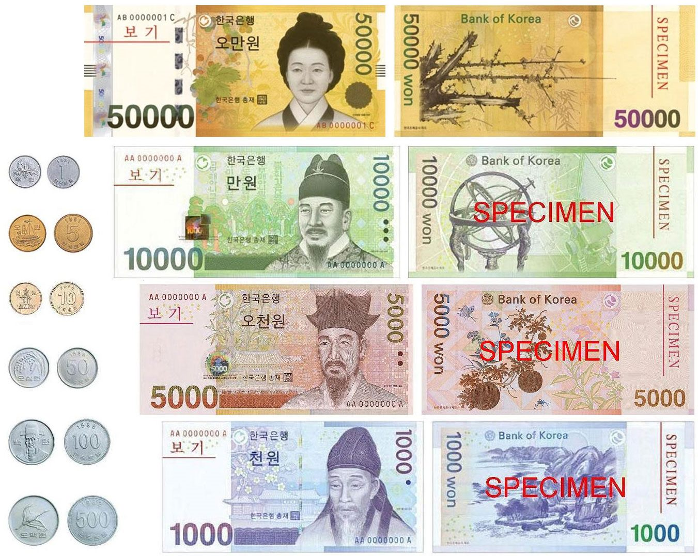

橋경제
경제원화 가치 17년 만에 최저… 1,540원 돌파, 재한 화인 가계가 흔들린다
원·달러 환율이 2009년 이후 최고로 치솟았다. 외국인 자금 이탈이 방아쇠를 당겼고, 본국에 돈을 보내는 화인 가정과 유학생이 가장 먼저 타격을 받는다. 정부는 '즉각 대응'을 예고했다.
원·달러 환율이 2009년 이후 최고로 치솟았다. 외국인 자금 이탈이 방아쇠를 당겼고, 본국에 돈을 보내는 화인 가정과 유학생이 가장 먼저 타격을 받는다. 정부는 '즉각 대응'을 예고했다.

달러뿐 아니라 유로 대비 원화도 약세. 유럽발 수입품과 여행 비용이 오른다.

대규모 자금 유출이 환율과 주가를 함께 끌어내렸다.

6월 11일 멕시코시티 개막, 7월 19일까지. 폭염 대비 규정 신설.

안전성·내약성 확인. 문어의 거울 사용도 관찰.

무척추동물의 거울 이용이 관찰돼 인지과학에 새로운 질문을 던졌다.

한국 축구대표팀이 12일 오전 11시(한국시간) 멕시코 과달라하라 스타디움에서 체코와 2026 북중미월드컵 조별리그 A조 1차전을 치른다. 첫 단추를 잘 끼워야 개최국 멕시코와의 2차전이 가벼워진다.
분야를 막론하고 오직 여성 창작자들이 출연하는 '영희 페스티벌'이 12일부터 사흘간 서울 마포아트센터 일대에서 열린다.
중국의 연간 영화 박스오피스가 6월 초 기준 160억위안을 돌파했다. 《할머니께 보내는 연서(給阿嬤的情書)》가 15억위안을 넘기며 올해 흥행 2위에 올랐다.
중국 상업 우주산업의 발사 일정이 빼곡하다. 이달 1일에는 창정 12호을 로켓이 첸판(千帆) 극궤도 08조 위성들을 궤도에 올렸다.

대만 증시가 급락과 반등을 오가는 변동장세를 보이고 있다. TSMC는 11일 주당 6대만달러 배당락을 소화한 가운데, 월 매출이 전년 대비 30.1% 늘며 저력을 보였다.
대만 프로야구 러톈 타오위안 구단이 19~21일 타오위안 구장에서 금곡상 수상 가수들이 총출동하는 '둥쯔파(動紫趴)' 이벤트를 연다. 시즌 중 신인 드래프트는 29일 열린다.

미국과 이란의 합의가 임박했다는 트럼프 미국 대통령의 발언이 글로벌 시장의 공포를 단숨에 걷어냈다. 12일 코스피는 7%대 급등해 '매수 사이드카'가 발동됐고, 대만 자취안지수도 TSMC 주도로 1,650포인트 가까이 반등했다. 안전자산인 금값은 6개월 만에 최저로 밀렸다.
멕시코 수비의 핵심 세사르 몬테스가 월드컵 개막전 남아공과의 경기에서 퇴장당해 한국전에 나서지 못한다. 195cm 최장신 수비수의 공백을 두고 한국 언론은 '특급 호재'라는 평가를 내놨다.